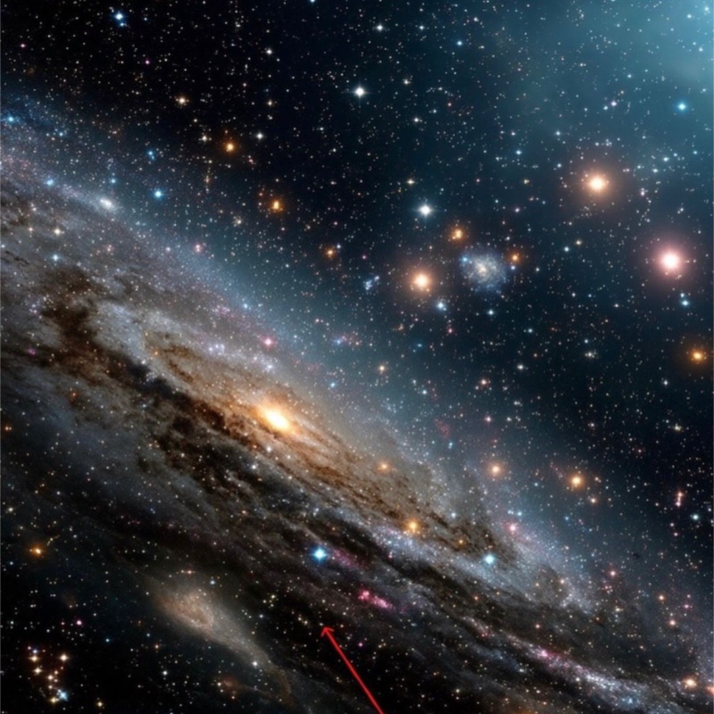
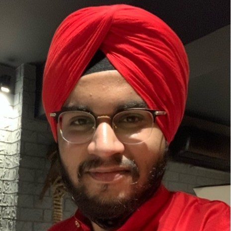
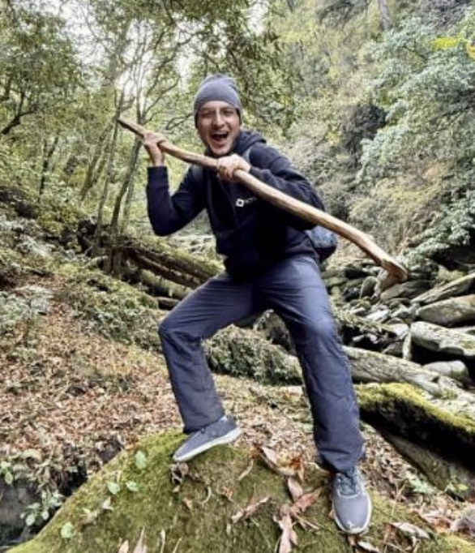
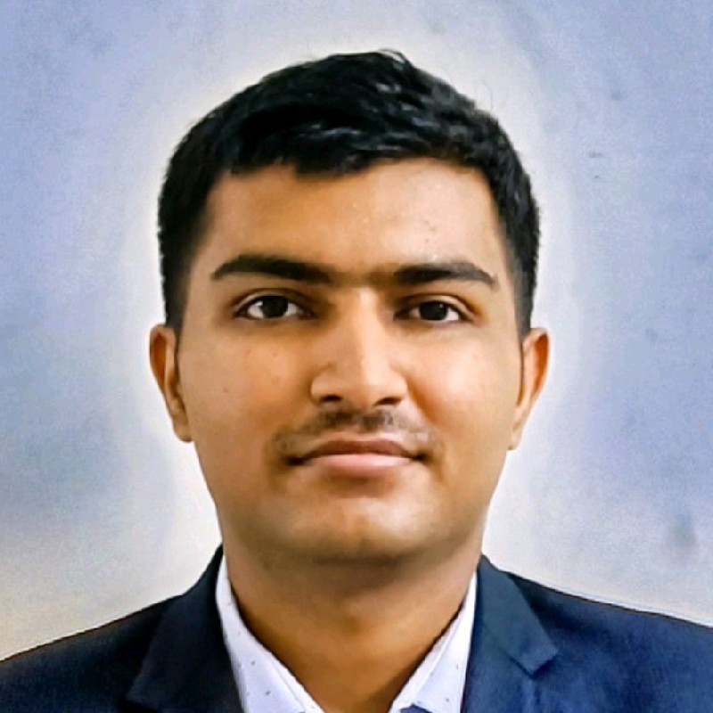
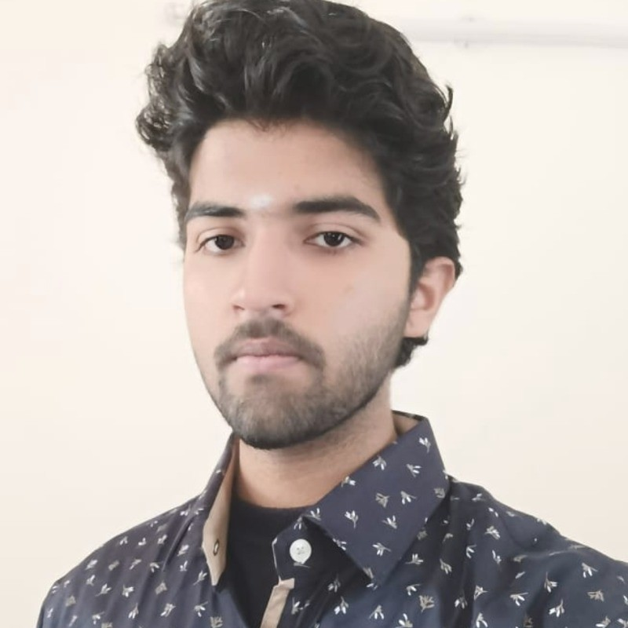

Decoding the
language
of the brain.
We develop computational frameworks and foundation models for neural signal analysis — with clinical brain-computer interfaces and AI-assisted neurological diagnostics at the centre.
Our Work
Computational approaches to understanding neural dynamics — with clinical translation at the core.
Active Research Threads — click to expand
Collaborating Institutions
Publications
Peer-reviewed work at the intersection of signal processing, machine learning, and clinical neuroscience.
The Team
Researchers at the intersection of signal processing, artificial intelligence, and clinical neuroscience.






Lab Blog
Research notes, technical essays, and commentary from the lab.
Announcements
News, milestones, and opportunities from the lab.
2026
2025
2025
Contact & Join
We welcome inquiries from prospective students, academic collaborators, and clinical partners.
siddharthpanwar@iitmandi.ac.in
IIT Mandi, North Campus
Mandi, HP 175075